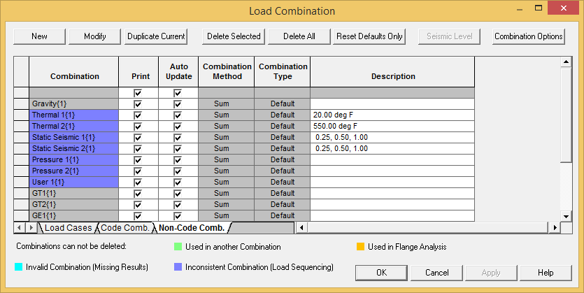

Displaying Load Combinations
In this section we'll review the load combinations that were defined in the previous chapter.
.jpg) 1. Select Result >
Setup > Combinations to display the Load
Combination dialog.
1. Select Result >
Setup > Combinations to display the Load
Combination dialog.
The information dialog is re-displayed, this time containing point information related to loads and load combinations.

- As you move through the tabs, you can see, AutoPIPE has automatically combined loads for calculation of piping code stresses. The Non-Code Comb category, shown above, is for operating combinations to analyze nozzle loads, support loads, deflections, etc. The default is for the user to combine these loads manually since different users have different requirements. AutoPIPE provides an option to automatically combine Non-Code Comb loads under the Home > Model Options/Result command.
| Note: |
The “Non-Code” combination sets, also known as user-defined non-code combinations, are the focus of the next section. |
- Press OK to close the dialog.